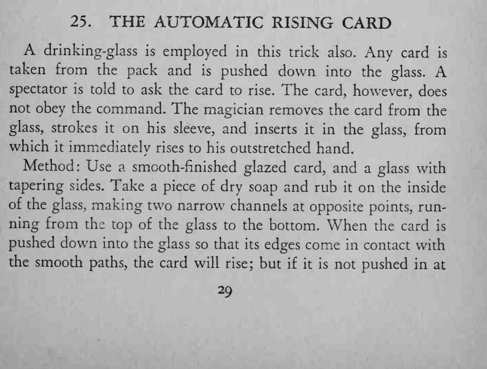
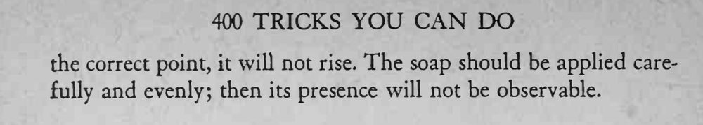

魔术师把一张牌插进玻璃杯，呵令它升起来它却不动；他把牌取出在袖子上擦一擦再插回去，牌就自己从杯里升到他手中。
插牌的位置是关键，多练几次记住角度，效果才稳定。


drinking-glass is employed in this trick also. Any card is taken from the pack and is pushed down into the glass. A spectator is told to ask the card to rise. The card, however, does not obey the command. The magician removes the card from the glass, strokes it on his sleeve, and inserts it in the glass, from which it immediately rises to his outstretched hand. Method: Use a smooth-finished glazed card, and a glass with tapering sides. Take a piece of dry soap and rub it on the inside of the glass, making two narrow channels at opposite points, running from the top of the glass to the bottom. When the card is pushed down into the glass so that its edges come in contact with the smooth paths, the card will rise; but if it is not pushed in at the correct point, it will not rise. The soap should be applied carefully and evenly; then its presence will not be observable.